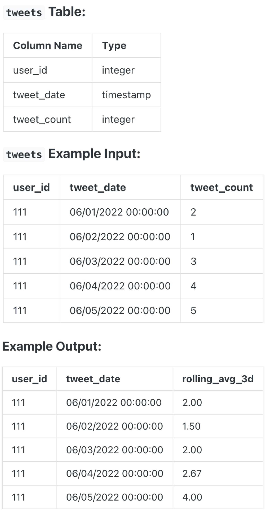

Question sourced from DataLemur.com.
Database: PostgreSQL
Given a table of tweet data over a specified time period, calculate the 3-day rolling average of tweets for each user. Output the user ID, tweet date, and rolling averages rounded to 2 decimal places.

/*
My strategy: Per Twitter user, for each row of data (i.e. a
tweet date), calculate the average tweet count for the row and
its preceding two rows (current day and two days before).
Window function syntax to remember: ROWS clause can be using
to specify the rows that the window function acts over (i.e.
ROWS BETWEEN lower AND upper bound).
*/
SELECT user_id, tweet_date,
ROUND(AVG(tweet_count) OVER (
PARTITION BY user_id
ORDER BY tweet_date
ROWS BETWEEN 2 PRECEDING AND CURRENT ROW
), 2) AS rolling_avg_3d
FROM tweets;